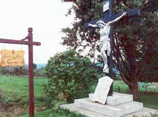
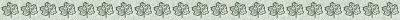
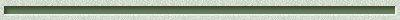
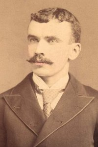
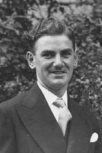
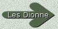

|
|
Robert Gagnon is baptized on March 1st,
1628, in the parish of Ste-Madeleine de La Ventrouze, in the Perche.
He is the son of Jean Gagnon and Marie Geoffroy. Robert
Gagnon arrives in New France around 1655. Three Gagnon cousins are already settled in the colony, having come
to join their sister and her husband.
 On April 2, 1656, on the site of the
future parish of Ste-Famille, on the Île d'Orléans, he is granted land four arpents
wide, running back as far as the planned road (about 64 and a half
arpents; an arpent is about 58 metres). This property lies
opposite the Côte de Beaupré.
Photo opposite: the monument of
the Gagnon Association raised on Robert Gagnon's ancestral land, on
the Île d'Orléans.
Robert undertakes to fence his property and to
leave fifteen feet on each side of his lot and along the shore
for a road to pass. He is also allowed
to fish in the river opposite his land. His immediate neighbours
are Jacques Perrot, dit Vildaigre, and Guillaume Landry, a fellow native of La
Ventrouze.
Robert Gagnon marries in Quebec City, on October 3, 1657, Marie Parenteau, born in 1641 in St-Nicolas de La Rochelle, daughter of Antoine
Parenteau, miller, carpenter and pit sawyer, and Anne Brisson.
They have ten children.
Robert Gagnon passes away on September 2,
1703, the year of a smallpox epidemic, but there is nothing
to show that he died of the terrible disease. Then his wife, Marie Parenteau, aged about
sixty-two, dies on November 17, 1705.
|
|

SECOND
GENERATION: JEAN GAGNON |
|
Jean Gagnon, born on February 16, 1659, is baptized in Quebec City on April
27, 1659.
On October 23, 1686, he marries Jeanne
Loignon, born in 1670, daughter of Pierre
Loignon* and Françoise Roussin. Between 1688 and 1713 they have twelve
children. The first two (Jean in 1688 and Marie in 1690) are born at
Ste-Famille, Île d'Orléans, but all the others are born at
Rivière-Ouelle, where Jean Gagnon becomes one of the first
pioneers, from at least 1692, the year his
third child was born. Their tenth child, Jean-Baptiste,
born in 1710, is our ancestor.
Jean Gagnon is appointed commander of the Militia for the whole Côte-Sud and the lower
St. Lawrence.
He marries a second time, to Françoise Doré.
When he dies in September 1717, he is buried at Rivière-Ouelle.
* Pierre Loignon was Mathieu Choret's
neighbour in Beauport before moving to the Île d'Orléans.
One of his daughters, Anne, married Joseph Choret, Mathieu Choret's second son,
in 1676. His youngest son, Charles-Joseph, married in 1695 the
daughter of Jeanne Choret, that is, Mathieu Choret's granddaughter.
|
|

THE MILITIA
UNDER THE FRENCH REGIME |
|

In short, the militiamen were
volunteer conscripts!!! who became "guerrillas".
|
In
1669
Louis XIV, King of France, decreed that all healthy men
aged 16
to 60 must serve in militia companies
set up in every parish
in Canada. Serving without pay in wartime and drilling
once a month in peacetime, these men became one of the
best military forces on the North American continent for the next 90
years. Quickly adopting the tactics of their Indigenous enemies
and allies, they led terrifying raids on the borders of
New York and New England, effectively tying down far larger numbers
of British and American troops. |
| The more
populous parishes could have two or more companies, with strengths
ranging from 5O to 80 men. Depending on the size of the population, they could
have one or more captains, lieutenants, ensigns and sergeants. Among the
officers, the militia captain
was a very important figure in the parish, ranking right after
the seigneur. He represented the governor and the intendant to the
peasants. Some captains even filled civil functions as local
administrators and government spokesmen. |
| So the Militia
was made up only of Canadiens (i.e. people born
in the colony). They were
farmers, fishermen, merchants... and, when needed, they took up arms and
went to fight the Indians or the English. They could also be
called up to reinforce the regular army. The militiamen were very well
suited to the climate and the country. They waged "la petite
guerre" (ambushes...), as they had learned from the Indians. Soldiers from Europe despised them and found these methods dishonourable;
they themselves made war "in lace", as in Europe. This
was not at all suited to the colony, where
the enemy always outnumbered the Canadiens.
The attitude of the administrators and officers who came to New France
only to make their fortune and go back to France as fast as possible bled the colony white, to the great dismay of the Canadiens, who
wanted their
country to prosper. It even proved fatal at the time of the Conquest of
1759.
Sources: various websites and
Brother Alfred Gagnon's manual. (The sources contradict one another on Robert Gagnon's
place of origin and date of arrival. Some say he was born in
Tourouvre, in the Perche, and arrived in New France in 1640,
with his three cousins.)
|
|

 THE GAGNON FAMILY LINE
THE GAGNON FAMILY LINE
|
|
GAGNON |
Robert Gagnon
(1628-1703) |
marriage
October 3, 1657
|
Marie Parenteau
(1641-1705) |
Jean Gagnon
(1659-1717) |
October 23, 1686 |
Jeanne Loignon
(1670- ) |
Jean-Baptiste Gagnon
(1710- ) |
August 13, 1736 |
Marguerite Langlois
|
Germain Gagnon
(1748- ) |
January 7, 1771 |
Marie-Louise Bérubé
|
Joseph-Marie Gagnon
(1791- ) |
October 29, 1810 |
Julienne Guy
|
François Gagnon
(1826-1896) |
July 24, 1849 |
Ombéline Dionne
( -1874) |
| Alphonsine Gagnon

Born: August 1869
Died: October 12, 1929
|
October 12, 1891 |
Arthur Caron

Born: 1868
Died: 1905
|
| Rosario
Charette

Born: January 20, 1897
Died: May 21, 1940
|
January 16, 1917 |
Marie-Anna
Caron

Born: April 27, 1897
Died: July 8, 1966
|
| Gérard
Charette

born: October 19, 1921
died: June 25, 1996
|
June 29, 1946 |
Jacqueline
Consigny

born: August 7, 1926
died: May 3, 1986
|


|